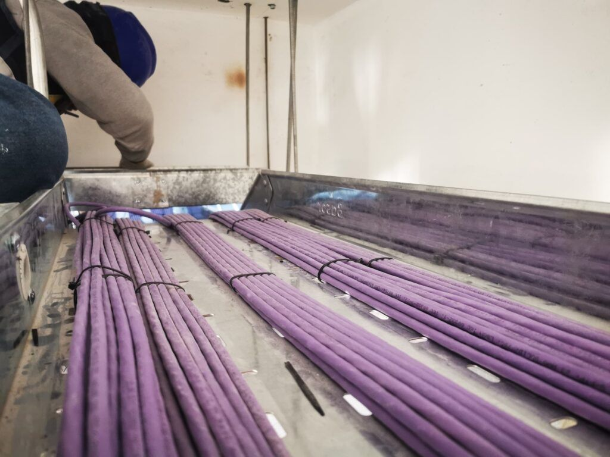

Redes y centro de datos
Sistema de cableado estructurado y fibra óptica
La base física de su red: el tendido de cables que conecta todos sus equipos activos y los integra con telefonía, datos, seguridad y domótica. Contamos con personal idóneo para el diseño y la instalación de cableado estructurado y fibra óptica, y para su medición y certificación.
¿Prefiere llamar? (01) 648 3248 · lunes a viernes, de 8:30 a 19:10.
Qué incluye
Análisis y diseño
Estudiamos sus necesidades y diseñamos un cableado eficiente y a la medida de su edificio u oficina.
Instalación y configuración
Tendido e instalación profesional del cableado, con un despliegue ordenado y de calidad.
Medición y certificación
Probamos y certificamos el cableado para asegurar que cumple los estándares de rendimiento y confiabilidad.
Mantenimiento y soporte
Mantenimiento periódico y soporte técnico para la continuidad de sus comunicaciones.
Medios que instalamos
Cable de cobre, fibra óptica e infraestructura inalámbrica, para voz, datos, video y el resto de servicios de comunicación de su edificio.

Obras
Dónde lo hemos aplicado
-

-

-

-

-


Redes y centro de datos
Otras soluciones de esta línea
- Conectividad y seguridad informáticaRedes cableadas y Wi-Fi para hospitales y oficinas, con switches y protección de red.Ver
- Diseño e implementación de data centerDiseño, distribución, ubicación e implementación de los equipos.Ver
- Gabinetes autocontenidos e InRowNueva línea para centros de datos: ficha técnica y cotización a pedido.Ver
- Procesamiento y almacenamiento centralizadoMontaje y configuración de servidores y sistemas de almacenamiento.Ver
- Infraestructura convergenteServidores, almacenamiento, redes y software integrados en un solo sistema.Ver
- Radioenlaces y microondasRadiocomunicación VHF/HF: equipos, mástil y antenas.Ver
¿Necesita cableado estructurado y fibra óptica?
Cuéntenos qué necesita y dónde, y le preparamos la cotización.